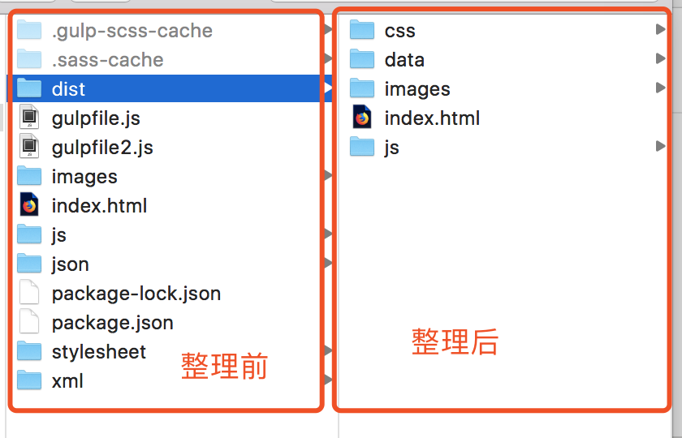
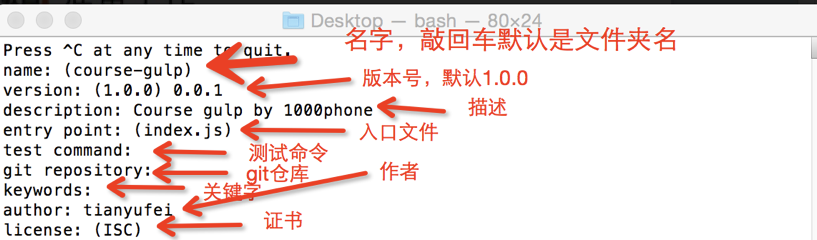
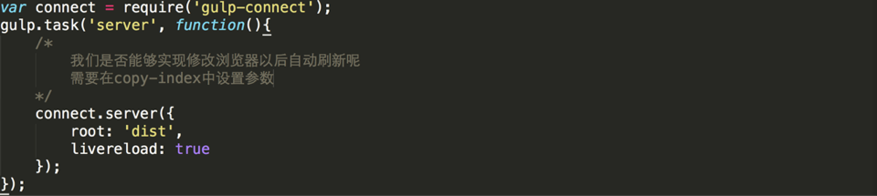

Gulp官网 Gulp 是基于node.js的一个前端自动化构建工具，开发这可以使用它构建自动化工作流程（前端集成开发环境）。 使用gulp你可以简化工作量，让你把重点放在功能的开发上，从而提高你的开发效率和工作质量。

安装node.js
nodejs官网 注意先要安装node.js 安装node.js一路下一步就好了 安装gulp 在mac版本下安装gulp sudo npm install gulp -g windows中直接省略sudo进行安装就可以了【注】如果大家使用npm下载插件的时候，发现下载不下来，我们需要npm换成国内的淘宝源。 接下来所有npm开头的命令，大家都需要换成cnpm命令。
【注】只要开始使用cnpm的命令了，就必须都使用cnpm的名字。
一.Gulp项目的创建
1.npm init 初始化  2.package.json配置现在我们可以使用 package.json 进行gulp的配置 如果要使用gulp 需要在工程目录下重新安装gulp 使用命令
npm install gulp --save-dev
npm i gulp -D //这是简写
--save-dev 将gulp安装的信息保存packpage.json

二、使用Gulp创建任务
使用gulp创建任务 gulpfile.js 这个js文件是我们gulp非常重要的配置文件 配置完这个文件 我们就可以使用gulp了
在根目录下新建一个js文件 gulpfile.js

在命令行中输入 gulp 任务名， 当然我们可以设置默认任务

三、Gulp具体的一些功能
gulp.src().pipe(gulp.dest()) 这个章节我们实现两个功能1、读取将要处理的文件 2、把处理好的文件放在指定地方
gulp.src 可以给我们找出需要处理的源文件
pipe 来处理找出的文件 pipe可以理解为管道 每一个管道我们都可以指定任务去处理
gulp.dest 最后通过这个命令将处理好的文件放在指定的地方
完成一个文件的拷贝，我们可以通过上述命令完成
return gulp.src('index.html').pipe(gulp.dest('dist'));


Gulp实现两个文件夹拷贝到一个目标文件夹中:
下面我们来看一下如何将两个文件夹中的内容拷贝到一个目标文件夹中
下面我们来创建多任务文件夹拷贝
在我们日常开发中还可能有一些特殊的需求
比如，我们在拷贝文件的时候，可以排除一些文件
通过数组将这两个文件写在一起
在前面加!可以过滤掉这个文件，使这个文件不被拷贝
return gulp.src(['xml/*.xml', 'json/*.json','!json/secret.json']).pipe(gulp.dest('dist/data')).
Gulp一次性执行多个任务
上述我们通过三个任务完成了拷贝工作，那么我们通过什么方式可以一次性执行上述三个任务呢

Gulp的监听
除了上述文件拷贝的功能以外，我们还可以通过gulp去监听工程中文件的变化

gulp-concat合并文件
sudo npm install gulp-concat --save-dev
在这里我们将两个js文件进行合并
四、使用gulp-scss编译css文件
如果 我们想要通过gulp去编译scss文件成css文件 我们可以安装gulp-scss插件 通过下述命令 进行安装sudo npm install gulp-sass —-save-dev
安装好以后 我们就可以使用gulp-sass编译文件了
【注】注意如果使用的是windows系统，请使用gulp-sass

五、gulp-connect来启动一个服务器
我们可以通过gulp-connect来启动一个服务程序 sudo npm install gulp-connect --save-dev